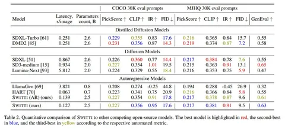

Часть 3, эксперименты и результаты
Мы обучили 2.5B модель на внутреннем датасете из 100М картинок. В качестве бейзлайнов взяли сравнимые по размеру SD3-Medium, Lumina-Next, Stable Diffusion XL и её дистиллированные версии: SDXL-Turbo, DMD2; а также авторегрессионные модели: Emu3, Lumina-mGPT, LlamaGen и HART.
Для оценки качества использовали стандартные метрики: FID, CLIP, Pickscore, Image Reward, — а также бенчмарк GenEval и пользовательские предпочтения на корзинке из 128 запросов (Parti Prompts). Юзеры оценивали релевантность, эстетичность, комплексность и дефектность изображений.
Switti значительно превзошла существующие авторегрессионные подходы, как по метрикам, так и по пользовательским предпочтениям. С диффузионками добились паритета по качеству, но при этом Switti генерирует в 7 раз быстрее оригинальной SDXL-модели и в 2 раза быстрее её ускоренных версий.
Отметим, что это пока лишь шаг в развитии новой генеративной парадигмы и ещё есть, куда расти, чтобы дотянуть качество до уровня ведущих генеративных моделей: YaART, Midjourney, FLUX, Recraft и Ideogram-v2. Наша команда уже приступает к дальнейшему развитию Switti. Так что следите за обновлениями!
Обзор подготовил
CV Time
